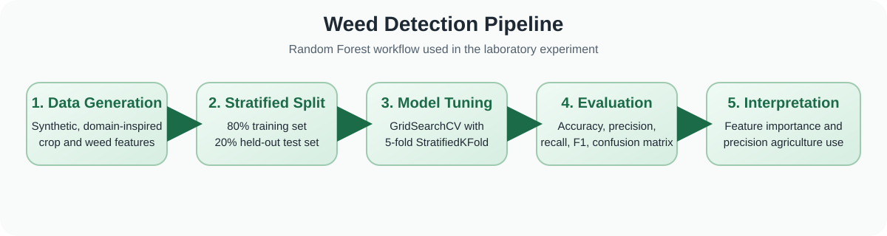
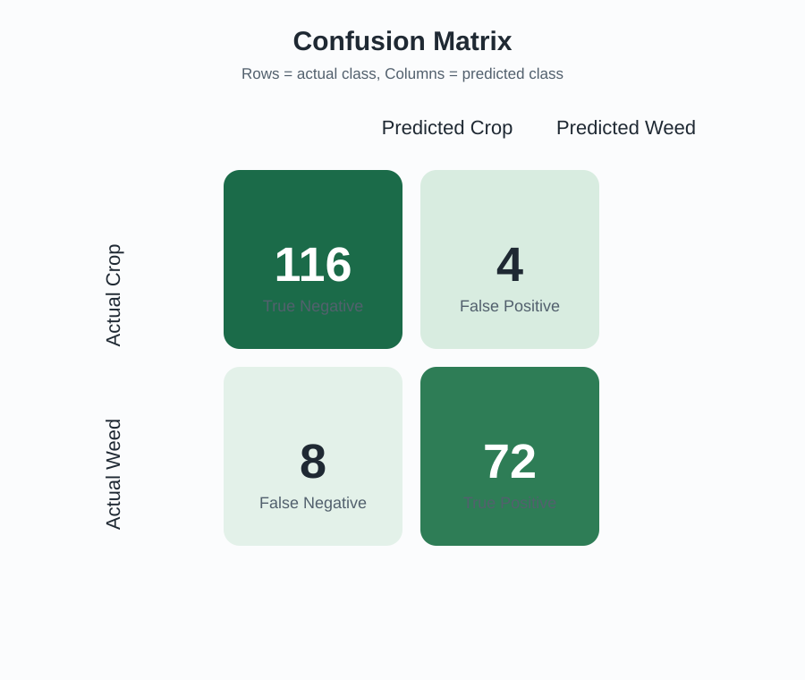
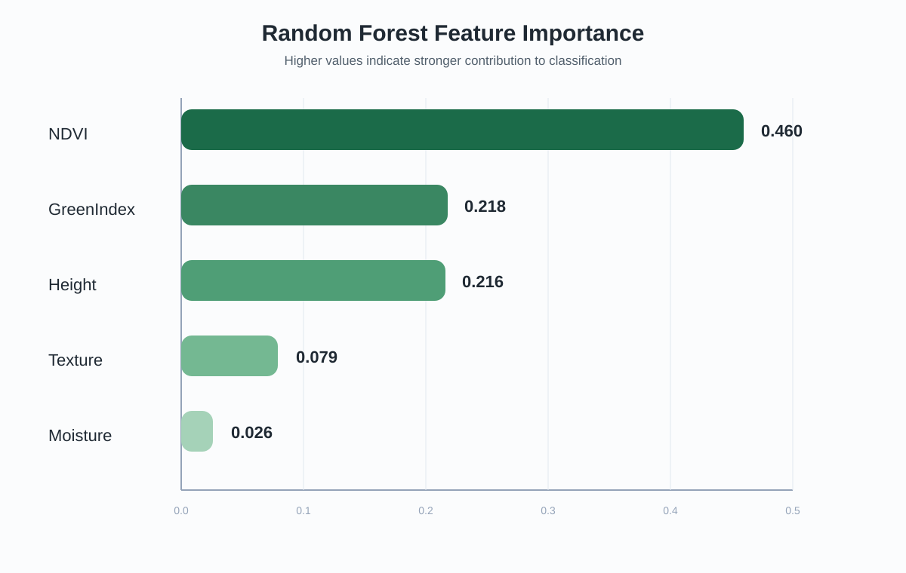

Replace the bracketed cover-page fields before final submission if needed.
This report presents a complete laboratory experiment on automated weed detection using a Random Forest classifier. The system is developed using a synthetic, domain-inspired dataset that models agriculturally meaningful features: GreenIndex, Texture, Moisture, Height, and NDVI. A total of 1000 samples were generated, with 601 crop samples and 399 weed samples, to simulate a moderately imbalanced field setting. The model was trained using a stratified 80:20 train-test split, and hyperparameters were tuned using GridSearchCV with 5-fold StratifiedKFold cross-validation.
The best Random Forest configuration achieved a cross-validated F1-score of 0.929. On the held-out test set, the tuned model achieved 94.0% accuracy, 94.7% precision, 90.0% recall, and a 92.3% F1-score. The confusion matrix showed strong overall performance, with 116 out of 120 crop samples and 72 out of 80 weed samples correctly classified. Feature-importance analysis identified NDVI as the strongest predictor, followed by GreenIndex and Height. These results show that Random Forest provides a strong, interpretable baseline for weed detection in a laboratory setting and can support future work using real crop imagery or sensor measurements.
| Component | Rubric Section(s) | Marks |
|---|---|---|
| Abstract + Objective + Problem | 2-4 | 7 |
| Dataset Description | 5 | 5 |
| Methodology | 6 | 10 |
| Implementation (Code) | 7 | 10 |
| Results & Analysis | 8 | 10 |
| Discussion + Conclusion | 9-10 | 5 |
| Applications + References | 11-12 | 3 |
| Total | 50 |
The cover page is included at the beginning of this document as required by the rubric.
Weeds reduce crop yield by competing with crops for water, nutrients, and sunlight. Manual removal is labor-intensive, while blanket herbicide spraying increases cost and environmental impact. This experiment develops a Random Forest classifier for weed detection using five agriculturally relevant features: GreenIndex, Texture, Moisture, Height, and NDVI. A synthetic, domain-inspired dataset of 1000 samples was generated to simulate crop and weed patterns under controlled laboratory conditions. The dataset was divided using a stratified 80:20 train-test split, and the model was tuned using GridSearchCV with 5-fold StratifiedKFold cross-validation. The best model achieved a cross-validated F1-score of 0.929 and test-set performance of 94.0% accuracy, 94.7% precision, 90.0% recall, and 92.3% F1-score. The confusion matrix showed strong classification performance with only a small number of weed samples missed. Feature-importance analysis identified NDVI as the strongest predictor, followed by GreenIndex and Height. The results indicate that Random Forest can serve as a reliable and interpretable baseline for weed detection and can support future precision agriculture systems based on real image or sensor data.
To develop and evaluate a Random Forest classifier that distinguishes weeds from crops using vegetation-related and morphological features, with the aim of achieving high classification performance and supporting future precision agriculture applications.
Input: Five features extracted from crop-field sensing or imaging systems: GreenIndex, Texture, Moisture, Height, and NDVI.
Output: A binary label WeedPresent, where 1 indicates weed and 0 indicates crop.
Context: Weeds compete with crops for nutrients, light, water, and space, reducing farm productivity. An automated classifier can support site-specific weed management by helping identify weed presence accurately and consistently.
The experiment uses a synthetic, domain-inspired dataset created specifically for this laboratory study. Rather than relabeling generic machine-learning features, the dataset was generated using separate feature distributions for crop and weed classes so that the variables better reflect agricultural meaning. Mild class overlap, measurement noise, and limited label noise were introduced to make the classification problem more realistic.
| Attribute | Description |
|---|---|
| Dataset size | 1000 samples |
| Class distribution | 601 crop samples, 399 weed samples |
| Training set | 800 samples |
| Test set | 200 samples |
| Target variable | WeedPresent (0 = crop, 1 = weed) |
| GreenIndex | Texture | Moisture | Height | NDVI | WeedPresent |
|---|---|---|---|---|---|
| 0.73 | 0.91 | 0.61 | 31.2 | 0.82 | 0 |
| 0.36 | 1.68 | 0.43 | 16.8 | 0.24 | 1 |
| 0.65 | 1.08 | 0.57 | 28.5 | 0.71 | 0 |
A synthetic dataset was generated using domain-inspired distributions for crop and weed samples. Crop samples were assigned generally higher GreenIndex, NDVI, and Height values, while weed samples showed different distributions in texture, moisture, and spectral response. A small amount of label noise was added to avoid an unrealistically perfect separation between the two classes.
The dataset was divided using a stratified 80:20 train-test split with random_state = 42, ensuring that class proportions remained stable across training and testing subsets. No feature scaling was applied because Random Forest is a tree-based algorithm and does not require standardization for effective performance.
A Random Forest Classifier was selected because it handles non-linear relationships well, is robust to noise, and provides feature-importance estimates that make the results interpretable. Hyperparameter tuning was performed using GridSearchCV with 5-fold StratifiedKFold cross-validation on the training data. The parameter grid included the number of trees, maximum depth, minimum samples per split, minimum samples per leaf, and number of features considered at each split.
The best hyperparameters identified were:
The tuned model was evaluated on the held-out test set using Accuracy, Precision, Recall, and F1-score. A confusion matrix and classification report were also generated. Feature importances were extracted from the trained model to understand which variables contributed most to the final decision-making process.

The following Python script was used to generate the dataset, train the model, evaluate performance, and save the artifacts:
"""Submission-ready weed detection demo using Random Forest.
This script is designed for academic submission when only a synthetic dataset
is available. The synthetic data is generated to reflect agricultural feature
names more honestly than renaming generic `make_classification` columns.
What the script does:
1. Generates a reproducible, domain-inspired synthetic dataset.
2. Uses a stratified train/test split to preserve class balance.
3. Tunes a Random Forest using 5-fold cross-validation on the training set.
4. Evaluates the best model on a held-out test set.
5. Saves the trained model and feature importance table.
"""
from __future__ import annotations
from pathlib import Path
import joblib
import numpy as np
import pandas as pd
from sklearn.ensemble import RandomForestClassifier
from sklearn.metrics import (
accuracy_score,
classification_report,
confusion_matrix,
f1_score,
precision_score,
recall_score,
)
from sklearn.model_selection import GridSearchCV, StratifiedKFold, train_test_split
RANDOM_STATE = 42
N_SAMPLES = 1000
TEST_SIZE = 0.20
FEATURE_COLUMNS = ["GreenIndex", "Texture", "Moisture", "Height", "NDVI"]
TARGET_COLUMN = "WeedPresent"
MODEL_PATH = Path("weed_rf_model.pkl")
IMPORTANCE_PATH = Path("feature_importance.csv")
DATA_PATH = Path("synthetic_weed_dataset.csv")
def generate_synthetic_weed_dataset(
n_samples: int = N_SAMPLES,
random_state: int = RANDOM_STATE,
) -> pd.DataFrame:
"""Create a reproducible synthetic dataset with agriculturally named features.
Class meanings:
- 0: Crop
- 1: Weed
The feature distributions intentionally overlap so the task remains realistic
instead of being perfectly separable.
"""
rng = np.random.default_rng(random_state)
# Rough field ratio: 60% crop, 40% weed.
y = rng.choice([0, 1], size=n_samples, p=[0.60, 0.40])
green_index = np.where(
y == 0,
rng.normal(loc=0.68, scale=0.11, size=n_samples),
rng.normal(loc=0.40, scale=0.14, size=n_samples),
)
texture = np.where(
y == 0,
rng.normal(loc=0.95, scale=0.28, size=n_samples),
rng.normal(loc=1.50, scale=0.35, size=n_samples),
)
moisture = np.where(
y == 0,
rng.normal(loc=0.58, scale=0.11, size=n_samples),
rng.normal(loc=0.47, scale=0.14, size=n_samples),
)
height = np.where(
y == 0,
rng.normal(loc=29.0, scale=5.0, size=n_samples),
rng.normal(loc=18.5, scale=5.5, size=n_samples),
)
ndvi = np.where(
y == 0,
rng.normal(loc=0.76, scale=0.10, size=n_samples),
rng.normal(loc=0.32, scale=0.16, size=n_samples),
)
# Introduce mild correlations and realistic measurement noise.
green_index = green_index + 0.10 * ndvi + rng.normal(0, 0.02, n_samples)
moisture = moisture + 0.03 * green_index + rng.normal(0, 0.02, n_samples)
height = height + 3.0 * ndvi + rng.normal(0, 1.2, n_samples)
# Add a small amount of label noise so evaluation remains realistic.
flip_mask = rng.random(n_samples) < 0.05
y[flip_mask] = 1 - y[flip_mask]
df = pd.DataFrame(
{
"GreenIndex": np.clip(green_index, 0.0, 1.0),
"Texture": np.clip(texture, 0.2, 3.0),
"Moisture": np.clip(moisture, 0.0, 1.0),
"Height": np.clip(height, 5.0, 45.0),
"NDVI": np.clip(ndvi, -0.2, 1.0),
TARGET_COLUMN: y,
}
)
return df
def build_model(random_state: int = RANDOM_STATE) -> GridSearchCV:
"""Configure cross-validated hyperparameter tuning for Random Forest."""
estimator = RandomForestClassifier(
random_state=random_state,
n_jobs=-1,
class_weight="balanced",
)
param_grid = {
"n_estimators": [100, 200],
"max_depth": [None, 8, 12],
"min_samples_split": [2, 5],
"min_samples_leaf": [1, 2],
"max_features": ["sqrt", None],
}
cv = StratifiedKFold(n_splits=5, shuffle=True, random_state=random_state)
return GridSearchCV(
estimator=estimator,
param_grid=param_grid,
scoring="f1",
cv=cv,
n_jobs=-1,
refit=True,
verbose=0,
)
def print_metrics(y_true: pd.Series, y_pred: np.ndarray) -> None:
"""Print the evaluation metrics used in the report."""
accuracy = accuracy_score(y_true, y_pred)
precision = precision_score(y_true, y_pred)
recall = recall_score(y_true, y_pred)
f1 = f1_score(y_true, y_pred)
matrix = confusion_matrix(y_true, y_pred)
print("=== TEST SET PERFORMANCE ===")
print(f"Accuracy : {accuracy:.3f}")
print(f"Precision: {precision:.3f}")
print(f"Recall : {recall:.3f}")
print(f"F1-Score : {f1:.3f}\n")
print("Confusion Matrix:")
print(matrix)
print("\nClassification Report:")
print(classification_report(y_true, y_pred, target_names=["Crop", "Weed"], digits=3))
def save_artifacts(model: RandomForestClassifier, feature_table: pd.DataFrame, df: pd.DataFrame) -> None:
"""Persist outputs for reuse in a notebook, demo, or viva."""
joblib.dump(
{
"model": model,
"feature_names": FEATURE_COLUMNS,
"target_name": TARGET_COLUMN,
"random_state": RANDOM_STATE,
},
MODEL_PATH,
)
feature_table.to_csv(IMPORTANCE_PATH, index=False)
df.to_csv(DATA_PATH, index=False)
def main() -> None:
print("=== WEED DETECTION WITH RANDOM FOREST ===\n")
df = generate_synthetic_weed_dataset()
X = df[FEATURE_COLUMNS]
y = df[TARGET_COLUMN]
print(f"Dataset shape: {df.shape}")
print("Class distribution:", y.value_counts().sort_index().to_dict())
print("\nNote: This is a synthetic, domain-inspired dataset for demonstration.\n")
X_train, X_test, y_train, y_test = train_test_split(
X,
y,
test_size=TEST_SIZE,
stratify=y,
random_state=RANDOM_STATE,
)
print(f"Training samples: {len(X_train)}")
print(f"Test samples : {len(X_test)}\n")
search = build_model()
search.fit(X_train, y_train)
best_model = search.best_estimator_
print("Best hyperparameters:")
print(search.best_params_)
print(f"\nBest 5-Fold CV F1-Score: {search.best_score_:.3f}\n")
y_pred = best_model.predict(X_test)
print_metrics(y_test, y_pred)
feature_table = (
pd.DataFrame(
{
"Feature": FEATURE_COLUMNS,
"Importance": best_model.feature_importances_,
}
)
.sort_values(by="Importance", ascending=False)
.reset_index(drop=True)
)
print("Feature Importances:")
print(feature_table.to_string(index=False))
save_artifacts(best_model, feature_table, df)
print(
f"\nSaved model to '{MODEL_PATH}', feature importances to '{IMPORTANCE_PATH}', "
f"and dataset to '{DATA_PATH}'."
)
if __name__ == "__main__":
main()
The tuned Random Forest classifier was evaluated on a held-out test set of 200 samples and achieved 94.0% accuracy, 94.7% precision, 90.0% recall, and 92.3% F1-score. The best 5-fold cross-validated F1-score on the training data was 0.929, indicating stable performance during model selection.
[[116 4] [ 8 72]]

Out of 120 crop samples, 116 were correctly classified while 4 were incorrectly labeled as weeds. Out of 80 weed samples, 72 were correctly detected while 8 were missed. The results indicate strong predictive performance, with especially high precision and strong but slightly lower recall for weed detection.
precision recall f1-score support
Crop 0.935 0.967 0.951 120
Weed 0.947 0.900 0.923 80
accuracy 0.940 200
macro avg 0.941 0.933 0.937 200
weighted avg 0.940 0.940 0.940 200
| Feature | Importance |
|---|---|
| NDVI | 0.460 |
| GreenIndex | 0.218 |
| Height | 0.216 |
| Texture | 0.079 |
| Moisture | 0.026 |

NDVI emerged as the strongest predictor in this synthetic laboratory setting, followed by GreenIndex and Height. This suggests that vegetation health and morphology played the largest roles in distinguishing crop-like and weed-like samples in the generated dataset.
The model delivered strong performance in a controlled laboratory demonstration. The high precision indicates that when the model predicts the presence of weeds, it is usually correct. The recall of 90.0% shows that most weeds were detected, although a small number of weed samples were missed. In practical agricultural use, missed weeds could continue to compete with crops, so improving recall would be an important direction for future work.
The experiment has several strengths. First, it uses interpretable features that are meaningful in agricultural monitoring, such as NDVI and GreenIndex. Second, the Random Forest algorithm handles non-linear patterns well and provides feature-importance estimates that make the model easier to explain. Third, the use of cross-validation and a held-out test set improves methodological reliability.
The main limitation is that the dataset is synthetic. Real field data would contain lighting variation, soil background changes, occlusion, weed diversity, and sensor noise that are not fully represented here. Therefore, the present results should be interpreted as a strong baseline laboratory study rather than proof of field-ready deployment.
This experiment successfully developed a Random Forest classifier for weed detection using five agriculturally meaningful features: GreenIndex, Texture, Moisture, Height, and NDVI. The final tuned model achieved 94.0% accuracy, 94.7% precision, 90.0% recall, and a 92.3% F1-score on the held-out test set. Feature-importance analysis showed that NDVI was the most influential predictor, followed by GreenIndex and Height. Overall, the study met its objective of building a reproducible and interpretable weed-detection pipeline. Future work should validate the approach using real crop-field images or sensor data and compare it with deep-learning methods for end-to-end detection.
=== WEED DETECTION WITH RANDOM FOREST ===
Dataset shape: (1000, 6)
Class distribution: {0: 601, 1: 399}
Note: This is a synthetic, domain-inspired dataset for demonstration.
Training samples: 800
Test samples : 200
Best hyperparameters:
{'max_depth': 8, 'max_features': 'sqrt', 'min_samples_leaf': 2, 'min_samples_split': 2, 'n_estimators': 100}
Best 5-Fold CV F1-Score: 0.929
=== TEST SET PERFORMANCE ===
Accuracy : 0.940
Precision: 0.947
Recall : 0.900
F1-Score : 0.923
Confusion Matrix:
[[116 4]
[ 8 72]]
Classification Report:
precision recall f1-score support
Crop 0.935 0.967 0.951 120
Weed 0.947 0.900 0.923 80
accuracy 0.940 200
macro avg 0.941 0.933 0.937 200
weighted avg 0.940 0.940 0.940 200
Feature Importances:
Feature Importance
NDVI 0.460239
GreenIndex 0.218244
Height 0.216138
Texture 0.079269
Moisture 0.026109
Saved model to 'weed_rf_model.pkl', feature importances to 'feature_importance.csv', and dataset to 'synthetic_weed_dataset.csv'.